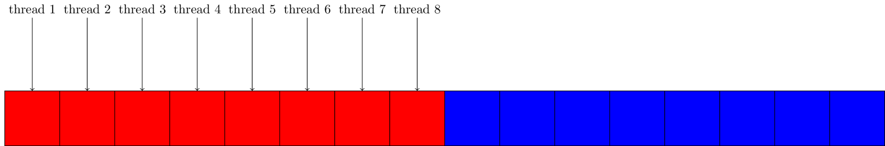

Memory Coalescing
In this part we will talk about memory coalescence. We will talk about what it is and why it is important. We will also showcase a program, where we will see how it should be done and how it should not be done.
What is it?
On a GPU we have three layers of memory: - Global - Shared - Local (registers)
When we access global memory on a gpu, we access multiple elements at the same time. This is important to keep in mind, when programming, because access to global memory is slow. So we need to utilise that we are accessing multiple elements at the same time. Therefore we need adjacent threads on the GPU to access adjacent memory in order to gain maximum performance.
Matrix addition
We will be looking at matrix addition, but for teaching purposes we will only parallelise one dimension. We will show the differences in parallelising each dimension and describe why there is a difference.
Parallelising the outer loop
When programming a CPU the correct thing to do would be to parallelise the outer loop, because we would then get cache coherency. So this is what we have done in the first part. This is not optimal on a GPU, because when we access memory, we get multiple elements at the same time as described earlier. When parallelising the outer loop, every thread in the thread block will read their section of memory, which requires multiple reads of global memory.

{:.code cuda}
Run the code in Jupyter{:.code pycuda}
Run the code in Jupyter{:.code pyopencl}
Run the code in Jupyter{:.code cpp-openmp}
Run the code in Jupyter{:.code cpp-openacc}
Run the code in Jupyter{:.code f90-openmp}
Run the code in Jupyter{:.code f90-openacc}
Run the code in JupyterParallelising the inner loop
To fix the error in the previous version, we instead parallelise the inner loop. This means when we are reading data from global memory, then every data point is given to a thread and no data is fetched without being assigned to a thread.

{:.code cuda}
Run the code in Jupyter{:.code pycuda}
Run the code in Jupyter{:.code pyopencl}
Run the code in Jupyter{:.code cpp-openmp}
Run the code in Jupyter{:.code cpp-openacc}
Run the code in Jupyter{:.code f90-openmp}
Run the code in Jupyter{:.code f90-openacc}
Run the code in Jupyter